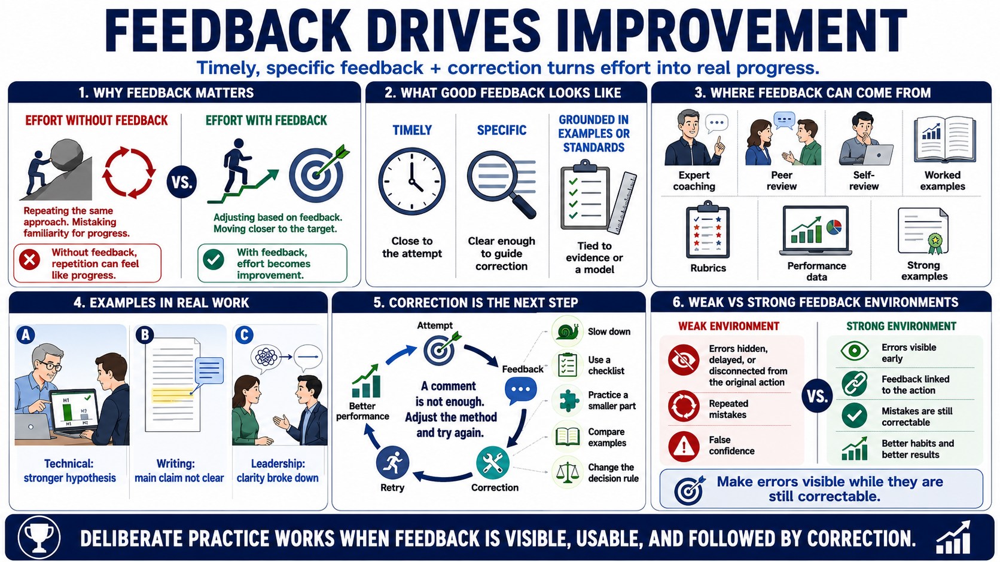

Feedback and Correction
Connecting to LMS... Progress: in progress

Narration
Feedback is the mechanism that turns effort into improvement. Without feedback, the learner may repeat the same approach and mistake familiarity for progress. Useful feedback is timely enough to connect to the attempt, specific enough to guide correction, and grounded in examples or standards. It tells the learner what worked, what did not, and what to try differently.
Feedback can come from expert coaching, peer review, self-review, worked examples, rubrics, performance data, or comparison against strong examples. In technical work, a senior reviewer might explain why one hypothesis was stronger than another. In writing, a reviewer might point out where the main claim is buried. In leadership, a coach might identify where the conversation lost clarity.
Correction is the next step after feedback. A comment or score is not enough if the learner does not adjust the method and try again. Correction may involve slowing down, using a checklist, practicing a smaller component, comparing two examples, or changing the decision rule. The value comes from closing the gap between the current performance and the target performance.
Weak feedback environments create repeated mistakes and false confidence. If errors are hidden, delayed, or never connected back to the original action, learners can develop habits that feel normal but do not improve results. Deliberate practice makes errors visible while they are still correctable. That is uncomfortable at times, but it is much more useful than discovering the same gap during high-stakes work.